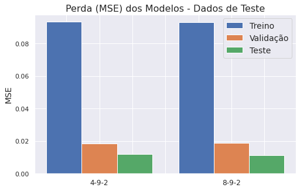
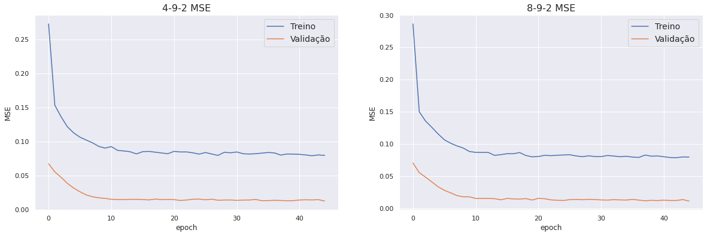

Redes Neurais para Previsão de Trajetória
Neste notebook, usaremos redes neurais para previsão de trajetória futura de uma tempestade. A ideia geral é dado as informações de um furacão de algumas horas atrás e do presente, projetaremos a sua posição futura.
import numpy as np
import matplotlib.pyplot as plt
import numpy as np
import pandas as pd
import datetime as dt
# from sklearn.model_selection import train_test_split
import seaborn as sns
sns.set()
from sklearn.metrics import r2_score
%matplotlib inline
/usr/local/lib/python3.6/dist-packages/statsmodels/tools/_testing.py:19: FutureWarning: pandas.util.testing is deprecated. Use the functions in the public API at pandas.testing instead.
import pandas.util.testing as tm
import tensorflow as tf
tf.keras.backend.clear_session()
print(tf.__version__)
2.3.0
Preparação dos dados
Iremos abaixo criar funções para preparar nossos dados para o modelo, e aplicá-las ao dataframe original
#Leitura dos dados
data = pd.read_csv('../Datasets/data_atl_merged2.csv',parse_dates=['Date'])
data.columns
Index(['ID', 'Name', 'Date', 'Time', 'Event', 'Status', 'Latitude',
'Longitude', 'Maximum Wind', 'Minimum Pressure', 'Date_c', 'Year',
'Month', 'Day', 'Latitude_c', 'Longitude_c', 'Duration', 'sst', 'rhum',
'wspd', 'slp', 'cldc'],
dtype='object')
## Funções de Padronização e Normalização:
def min_max_scale(data,cols):
df = data.copy()
for col in cols:
min_ = df[col].min()
max_ = df[col].max()
df.loc[:,col] = (df[col]-min_)/(max_-min_)
return df[cols]
def mim_max_scale_back(scaled,original,cols):
df = scaled.copy()
for col in cols:
min_ = original[col].min()
max_ = original[col].max()
df.loc[:,col] = df[col]*(max_-min_)+min_
return df[cols]
def standard_scale(data,cols):
df = data.copy()
for col in cols:
mean = df[col].mean()
std = df[col].std()
df.loc[:,col] = (df[col]-mean)/std
return df[cols]
def standard_scale_back(scaled,original,cols):
df = scaled.copy()
for col in cols:
mean = original[col].mean()
std = original[col].std()
df.loc[:,col] = df[col]*std+mean
return df[cols]
# Função que divide os dados por ID da tempestade
def split(df):
st = []
ids = df.ID.unique()
for ID in ids:
st.append(df[df.ID==ID])
return st
splitted = split(data)
print(len(splitted))
685
A função "clean_data" formata o preditor Tempo, o convertendo para horas (por padrão, horas após Jan/1951), e padroniza os dados de input.
A função "shift_data", faz um shift dos dados e dá como saída as matriz tridimensional X e o vetor Y, onde X é composto por matrizes :
na qual:
-
representam os preditores usados (Usaremos 4 inicialmente: tempo latitude, longitude e velocidade de vento)
-
representa o preditor no registro de tempo .
-
é o parâmetros "shift", que representa em quantos períodos passados basearemos a previsão futura. Por padrão, inicialmente, deixamos . Como cada registro é espaçado por 6 horas, neste formado estamos usando daados do presente e de 12 horas atrás, pra projetar o dado futuro.
Sendo assim, trabalhando com temos que as matrizes de X serão do tipo:
O vetor geral é composto por:
na qual:
- e representam latitude e longitude no registro de tempo
- é o parâmetro "pred", que diz quantos períodos à frente iremos prever. Por padrão, deixamos , assim a matriz se resume em um vetor . Usamos previsões de 3 registros passados para prever o próximo registro após o último ponto de treino. Um trabalho futuro seria usar intervalos de previsões maiores, mas vamos nos ater aqui a apenas 1 registro à frete, o que equivale a 6 horas na grande maiorias dos pontos.
cols1 = ['Hours','Latitude','Longitude','Maximum Wind']
data.loc[:,'Time_new']=data.Date+data.Time.map(lambda x: pd.Timedelta(hours=x/100))
def clean_data(df,input_cols = cols1, year0 = 1951):
df2 = df.copy()
df2.loc[:,'Hours'] = (df2.loc[:,'Time_new']-pd.Timestamp(year0,1,1))/pd.Timedelta('1 hour')
df2.loc[:,input_cols] = standard_scale(df2,input_cols)
return df2[['ID']+input_cols]
def shift_data(df,shift = 3,pred = 1):
x = []
y = []
df = df.set_index(np.arange(0,len(df)))
for i in range(0,len(df)-shift):
x_arr = []
for j in range(i,i+shift):
x_arr.append(df.loc[j,:])
if pred == 1:
y.append(np.array(df.loc[i+shift:i+shift+pred-1,['Latitude','Longitude']]).ravel())
else:
y.append(np.array(df.loc[i+shift:i+shift+pred-1,['Latitude','Longitude']]))
x.append(np.array(x_arr))
return np.array(x),np.array(y)
data_cleaned = clean_data(data)
data_cleaned.describe()
| Hours | Latitude | Longitude | Maximum Wind | |
|---|---|---|---|---|
| count | 2.238600e+04 | 2.238600e+04 | 2.238600e+04 | 2.238600e+04 |
| mean | -1.312271e-17 | 3.398752e-15 | 4.449279e-15 | 5.249630e-16 |
| std | 1.000000e+00 | 1.000000e+00 | 1.000000e+00 | 1.000000e+00 |
| min | -1.823465e+00 | -1.939104e+00 | -2.303286e+00 | -1.644750e+00 |
| 25% | -8.725997e-01 | -8.005268e-01 | -7.741070e-01 | -8.529203e-01 |
| 50% | 1.595638e-01 | -4.466462e-02 | -5.884587e-02 | -2.590479e-01 |
| 75% | 9.229854e-01 | 6.250867e-01 | 7.057436e-01 | 5.327820e-01 |
| max | 1.499554e+00 | 5.121988e+00 | 6.195990e+00 | 4.491932e+00 |
Treino, Validação e Teste
Para formatar os dados de treino, teste e validação, primeiramente, usamos a função "split", que separa os dados em uma lista de dataframes onde cada um deles representa uma tempestade diferente.
Após isso atribuimos 70% da lista para treino, 20% para validação e 10% para teste. Cada dataframe é devidamente formatado para as matrizes acima usando a função "shift_data", e após isso, unimos as matrizes de saída para gerar a numpy array final, do modelo.
Se fizéssemos o split diretamente, esse tipo de erro poderia acontecer. Suponha que uma tempestade tem seu último registro em 20 de Agosto em um determinado local, e uma outra tempestade se inicial dia 21 de Agosto em um local totalmente diferente. Um split direto poderia usar o registro de 20 de Agosto para prever o do dia 21, sendo que não há relação entre eles.
Essa separação por tempestade é importante para garantir a integridade dos nossos dados de modelagem, de forma que o treinamento seja feito tempestade por tempestade.
def train_val_test_split(df,t=0.7,v=0.2,input_cols=cols1,shift=3,pred=1):
# t = fração de treino
# v = fração de validação
# fração de teste = 1-t-v
# df = dataset já limpo por clean_data
splitted_data = split(df)
# Separamos os dados tempestade por tempestade para
# evitar cruzamento de dados entre eventos diferentes
n = len(splitted_data)
train_storms = splitted_data[0:int(n*t)]
val_storms = splitted_data[int(n*t):int(n*(t+v))]
test_storms = splitted_data[int(n*(1-t-v)):]
#Geramos uma lista de matrizes, onde cada lista se refere
#aos dados descocados de uma tempestade diferente
xy_train = [shift_data(train[input_cols],shift,pred) for train in train_storms]
xy_val = [shift_data(val[input_cols],shift,pred) for val in val_storms]
xy_test = [shift_data(test[input_cols],shift,pred) for test in test_storms]
# Concatenação das matrizes para gerar os dados finais
xtrain = np.concatenate([x[0] for x in xy_train],axis=0)
ytrain = np.concatenate([y[1] for y in xy_train],axis=0)
xval = np.concatenate([x[0] for x in xy_val],axis=0)
yval = np.concatenate([y[1] for y in xy_val],axis=0)
xtest = np.concatenate([x[0] for x in xy_test],axis=0)
ytest = np.concatenate([y[1] for y in xy_test],axis=0)
return xtrain, ytrain, xval, yval, xtest, ytest
%%time
#O processo de split pode ser lento à depender de seu computador
xtrain, ytrain, xval, yval, xtest, ytest = train_val_test_split(data_cleaned)
xtrain.shape,ytrain.shape,xval.shape,yval.shape,xtest.shape,ytest.shape
CPU times: user 56.7 s, sys: 39.9 ms, total: 56.8 s
Wall time: 56.7 s
%%time
## Modelo que usa sst, rhum, slp e cldc (Temperatura do mar, Umidade, Pressão e Nebulosidade)
cols2 = cols1 + ['sst','rhum','slp','cldc']
cleaned2 = clean_data(data,cols2)
xtrain2, ytrain2, xval2, yval2, xtest2, ytest2 = train_val_test_split(cleaned2,input_cols=cols2)
CPU times: user 56.6 s, sys: 90.9 ms, total: 56.7 s
Wall time: 56.6 s
xtrain2.shape
(14010, 3, 8)
Modelos - Redes Neurais
Vamos criar alguns modelos determinísticos e depois comparar a médias dos erros ao quadrado (MSE) nos dados de validação e teste. (Uma espécie de cross-validation).
Segundo os artigos na qual usamos como referência (Veja Bibliografia), apenas uma camada interna é suficiente. Resta saber quantos neurônios usar, para isso avaliaremos os modelos com 3, 6, e 9 neurônios internos.
Usaremos a função de ativação sigmoid na camada interna. e linear na camada de output, já que os dados de saída são numéricos contínuos. Usamos também uma camada de dropout de 15% para evitar overfitting.
Após eleger o melhor, incluiremos um fator probabilístico para gerar intervalos de confianças nas predições.
Índice de Modelos
-
Model_ihj --> Modelo com entrada de variáveis, neurônios na camada interna e pontos de saída (no nosso caso sempre)
-
Model_4h2 --> Modelo que usa as variáveis Tempo, Latitude, Longitude e Velocidame Máxima de Vento (4 variáveis) de três registros passados para prever a Latitude e Longitude do próximo registro (2 saídas) usando neurônios na camada interna. Aqui geraremos 3 modelos para os valores de h sendo 3, 6 e 9.
-
Model_8h2 --> Modelo similar ao anterior, porém utiliza quatro variáveis a mais como entrada: sst, rhum, slp, cldc; Representando Temperatura a nível do mar, Umidade, Pressão a nível do mar e Cobertura de Nuvens.
# Modelos tipo 4h2
model_432 = tf.keras.models.Sequential([
tf.keras.layers.Flatten(input_shape=(3,4)),
tf.keras.layers.Dense(3, activation='sigmoid'),
tf.keras.layers.Dropout(0.15),
tf.keras.layers.Dense(2, activation='linear')
])
model_462 = tf.keras.models.Sequential([
tf.keras.layers.Flatten(input_shape=(3,4)),
tf.keras.layers.Dense(6, activation='sigmoid'),
tf.keras.layers.Dropout(0.15),
tf.keras.layers.Dense(2, activation='linear')
])
model_492 = tf.keras.models.Sequential([
tf.keras.layers.Flatten(input_shape=(3,4)),
tf.keras.layers.Dense(9, activation='sigmoid'),
tf.keras.layers.Dropout(0.15),
tf.keras.layers.Dense(2, activation='linear')
])
# Modelos tipo 8h2
model_832 = tf.keras.models.Sequential([
tf.keras.layers.Flatten(input_shape=(3,8)),
tf.keras.layers.Dense(3, activation='sigmoid'),
tf.keras.layers.Dropout(0.15),
tf.keras.layers.Dense(2, activation='linear')
])
model_862 = tf.keras.models.Sequential([
tf.keras.layers.Flatten(input_shape=(3,8)),
tf.keras.layers.Dense(6, activation='sigmoid'),
tf.keras.layers.Dropout(0.15),
tf.keras.layers.Dense(2, activation='linear')
])
model_892 = tf.keras.models.Sequential([
tf.keras.layers.Flatten(input_shape=(3,8)),
tf.keras.layers.Dense(9, activation='sigmoid'),
tf.keras.layers.Dropout(0.15),
tf.keras.layers.Dense(2, activation='linear')
])
loss_fn = tf.keras.losses.MeanSquaredError()
optimizer = tf.keras.optimizers.Adam()
model_432.compile(optimizer=optimizer,
loss=loss_fn)
model_462.compile(optimizer=optimizer,
loss=loss_fn)
model_492.compile(optimizer=optimizer,
loss=loss_fn)
model_832.compile(optimizer=optimizer,
loss=loss_fn)
model_862.compile(optimizer=optimizer,
loss=loss_fn)
model_892.compile(optimizer=optimizer,
loss=loss_fn)
model_432.summary()
Model: "sequential"
_________________________________________________________________
Layer (type) Output Shape Param #
=================================================================
flatten (Flatten) (None, 12) 0
_________________________________________________________________
dense (Dense) (None, 3) 39
_________________________________________________________________
dropout (Dropout) (None, 3) 0
_________________________________________________________________
dense_1 (Dense) (None, 2) 8
=================================================================
Total params: 47
Trainable params: 47
Non-trainable params: 0
_________________________________________________________________
%%time
history_432 = model_432.fit(xtrain, ytrain, validation_data=(xval,yval), epochs=45,
verbose=0)
history_462 = model_462.fit(xtrain, ytrain, validation_data=(xval,yval), epochs=45,
verbose=0)
history_492 = model_492.fit(xtrain, ytrain, validation_data=(xval,yval), epochs=45,
verbose=1)
Epoch 1/45
438/438 [==============================] - 1s 1ms/step - loss: 0.2730 - val_loss: 0.0672
Epoch 2/45
438/438 [==============================] - 1s 1ms/step - loss: 0.1533 - val_loss: 0.0552
Epoch 3/45
438/438 [==============================] - 1s 1ms/step - loss: 0.1363 - val_loss: 0.0472
Epoch 4/45
438/438 [==============================] - 1s 1ms/step - loss: 0.1216 - val_loss: 0.0384
Epoch 5/45
438/438 [==============================] - 1s 1ms/step - loss: 0.1126 - val_loss: 0.0314
Epoch 6/45
438/438 [==============================] - 1s 1ms/step - loss: 0.1063 - val_loss: 0.0260
Epoch 7/45
438/438 [==============================] - 1s 1ms/step - loss: 0.1021 - val_loss: 0.0214
Epoch 8/45
438/438 [==============================] - 1s 1ms/step - loss: 0.0981 - val_loss: 0.0186
Epoch 9/45
438/438 [==============================] - 1s 1ms/step - loss: 0.0928 - val_loss: 0.0171
Epoch 10/45
438/438 [==============================] - 1s 1ms/step - loss: 0.0903 - val_loss: 0.0162
Epoch 11/45
438/438 [==============================] - 1s 1ms/step - loss: 0.0925 - val_loss: 0.0149
Epoch 12/45
438/438 [==============================] - 1s 1ms/step - loss: 0.0869 - val_loss: 0.0146
Epoch 13/45
438/438 [==============================] - 1s 1ms/step - loss: 0.0860 - val_loss: 0.0145
Epoch 14/45
438/438 [==============================] - 1s 1ms/step - loss: 0.0849 - val_loss: 0.0148
Epoch 15/45
438/438 [==============================] - 1s 1ms/step - loss: 0.0817 - val_loss: 0.0149
Epoch 16/45
438/438 [==============================] - 1s 1ms/step - loss: 0.0850 - val_loss: 0.0146
Epoch 17/45
438/438 [==============================] - 1s 1ms/step - loss: 0.0854 - val_loss: 0.0140
Epoch 18/45
438/438 [==============================] - 1s 1ms/step - loss: 0.0843 - val_loss: 0.0152
Epoch 19/45
438/438 [==============================] - 1s 1ms/step - loss: 0.0831 - val_loss: 0.0145
Epoch 20/45
438/438 [==============================] - 1s 1ms/step - loss: 0.0820 - val_loss: 0.0147
Epoch 21/45
438/438 [==============================] - 1s 1ms/step - loss: 0.0854 - val_loss: 0.0145
Epoch 22/45
438/438 [==============================] - 1s 1ms/step - loss: 0.0846 - val_loss: 0.0132
Epoch 23/45
438/438 [==============================] - 1s 1ms/step - loss: 0.0846 - val_loss: 0.0139
Epoch 24/45
438/438 [==============================] - 1s 1ms/step - loss: 0.0833 - val_loss: 0.0150
Epoch 25/45
438/438 [==============================] - 1s 1ms/step - loss: 0.0814 - val_loss: 0.0153
Epoch 26/45
438/438 [==============================] - 1s 1ms/step - loss: 0.0838 - val_loss: 0.0142
Epoch 27/45
438/438 [==============================] - 1s 1ms/step - loss: 0.0815 - val_loss: 0.0151
Epoch 28/45
438/438 [==============================] - 1s 1ms/step - loss: 0.0795 - val_loss: 0.0135
Epoch 29/45
438/438 [==============================] - 1s 1ms/step - loss: 0.0841 - val_loss: 0.0139
Epoch 30/45
438/438 [==============================] - 1s 1ms/step - loss: 0.0834 - val_loss: 0.0140
Epoch 31/45
438/438 [==============================] - 1s 1ms/step - loss: 0.0846 - val_loss: 0.0133
Epoch 32/45
438/438 [==============================] - 1s 1ms/step - loss: 0.0819 - val_loss: 0.0138
Epoch 33/45
438/438 [==============================] - 1s 1ms/step - loss: 0.0815 - val_loss: 0.0139
Epoch 34/45
438/438 [==============================] - 1s 1ms/step - loss: 0.0819 - val_loss: 0.0147
Epoch 35/45
438/438 [==============================] - 1s 1ms/step - loss: 0.0829 - val_loss: 0.0129
Epoch 36/45
438/438 [==============================] - 1s 1ms/step - loss: 0.0838 - val_loss: 0.0130
Epoch 37/45
438/438 [==============================] - 1s 1ms/step - loss: 0.0832 - val_loss: 0.0134
Epoch 38/45
438/438 [==============================] - 1s 1ms/step - loss: 0.0800 - val_loss: 0.0132
Epoch 39/45
438/438 [==============================] - 1s 1ms/step - loss: 0.0816 - val_loss: 0.0128
Epoch 40/45
438/438 [==============================] - 1s 1ms/step - loss: 0.0814 - val_loss: 0.0129
Epoch 41/45
438/438 [==============================] - 1s 1ms/step - loss: 0.0811 - val_loss: 0.0139
Epoch 42/45
438/438 [==============================] - 1s 1ms/step - loss: 0.0802 - val_loss: 0.0142
Epoch 43/45
438/438 [==============================] - 1s 1ms/step - loss: 0.0790 - val_loss: 0.0140
Epoch 44/45
438/438 [==============================] - 1s 1ms/step - loss: 0.0802 - val_loss: 0.0144
Epoch 45/45
438/438 [==============================] - 1s 1ms/step - loss: 0.0795 - val_loss: 0.0124
CPU times: user 1min 9s, sys: 6.27 s, total: 1min 16s
Wall time: 58.9 s
%%time
history_832 = model_832.fit(xtrain2, ytrain2, validation_data=(xval2,yval2), epochs=45,
verbose=0)
history_862 = model_862.fit(xtrain2, ytrain2, validation_data=(xval2,yval2), epochs=45,
verbose=0)
history_892 = model_892.fit(xtrain2, ytrain2, validation_data=(xval2,yval2), epochs=45,
verbose=1)
Epoch 1/45
438/438 [==============================] - 1s 1ms/step - loss: 0.2866 - val_loss: 0.0705
Epoch 2/45
438/438 [==============================] - 0s 1ms/step - loss: 0.1502 - val_loss: 0.0557
Epoch 3/45
438/438 [==============================] - 0s 1ms/step - loss: 0.1358 - val_loss: 0.0487
Epoch 4/45
438/438 [==============================] - 0s 1ms/step - loss: 0.1260 - val_loss: 0.0413
Epoch 5/45
438/438 [==============================] - 0s 1ms/step - loss: 0.1158 - val_loss: 0.0338
Epoch 6/45
438/438 [==============================] - 1s 1ms/step - loss: 0.1067 - val_loss: 0.0282
Epoch 7/45
438/438 [==============================] - 1s 1ms/step - loss: 0.1013 - val_loss: 0.0243
Epoch 8/45
438/438 [==============================] - 1s 1ms/step - loss: 0.0972 - val_loss: 0.0201
Epoch 9/45
438/438 [==============================] - 1s 1ms/step - loss: 0.0939 - val_loss: 0.0181
Epoch 10/45
438/438 [==============================] - 1s 1ms/step - loss: 0.0884 - val_loss: 0.0181
Epoch 11/45
438/438 [==============================] - 1s 1ms/step - loss: 0.0871 - val_loss: 0.0155
Epoch 12/45
438/438 [==============================] - 1s 1ms/step - loss: 0.0871 - val_loss: 0.0155
Epoch 13/45
438/438 [==============================] - 1s 1ms/step - loss: 0.0870 - val_loss: 0.0156
Epoch 14/45
438/438 [==============================] - 1s 1ms/step - loss: 0.0825 - val_loss: 0.0153
Epoch 15/45
438/438 [==============================] - 1s 1ms/step - loss: 0.0836 - val_loss: 0.0136
Epoch 16/45
438/438 [==============================] - 1s 1ms/step - loss: 0.0851 - val_loss: 0.0156
Epoch 17/45
438/438 [==============================] - 0s 1ms/step - loss: 0.0850 - val_loss: 0.0149
Epoch 18/45
438/438 [==============================] - 1s 1ms/step - loss: 0.0868 - val_loss: 0.0147
Epoch 19/45
438/438 [==============================] - 1s 1ms/step - loss: 0.0823 - val_loss: 0.0154
Epoch 20/45
438/438 [==============================] - 0s 1ms/step - loss: 0.0802 - val_loss: 0.0132
Epoch 21/45
438/438 [==============================] - 0s 1ms/step - loss: 0.0807 - val_loss: 0.0158
Epoch 22/45
438/438 [==============================] - 0s 1ms/step - loss: 0.0826 - val_loss: 0.0151
Epoch 23/45
438/438 [==============================] - 1s 1ms/step - loss: 0.0820 - val_loss: 0.0134
Epoch 24/45
438/438 [==============================] - 0s 1ms/step - loss: 0.0827 - val_loss: 0.0128
Epoch 25/45
438/438 [==============================] - 0s 1ms/step - loss: 0.0831 - val_loss: 0.0125
Epoch 26/45
438/438 [==============================] - 0s 1ms/step - loss: 0.0834 - val_loss: 0.0138
Epoch 27/45
438/438 [==============================] - 0s 1ms/step - loss: 0.0816 - val_loss: 0.0141
Epoch 28/45
438/438 [==============================] - 0s 1ms/step - loss: 0.0805 - val_loss: 0.0137
Epoch 29/45
438/438 [==============================] - 1s 1ms/step - loss: 0.0817 - val_loss: 0.0142
Epoch 30/45
438/438 [==============================] - 0s 1ms/step - loss: 0.0807 - val_loss: 0.0139
Epoch 31/45
438/438 [==============================] - 0s 1ms/step - loss: 0.0806 - val_loss: 0.0133
Epoch 32/45
438/438 [==============================] - 0s 1ms/step - loss: 0.0823 - val_loss: 0.0131
Epoch 33/45
438/438 [==============================] - 0s 1ms/step - loss: 0.0814 - val_loss: 0.0137
Epoch 34/45
438/438 [==============================] - 0s 1ms/step - loss: 0.0804 - val_loss: 0.0134
Epoch 35/45
438/438 [==============================] - 0s 1ms/step - loss: 0.0811 - val_loss: 0.0131
Epoch 36/45
438/438 [==============================] - 0s 1ms/step - loss: 0.0798 - val_loss: 0.0141
Epoch 37/45
438/438 [==============================] - 0s 1ms/step - loss: 0.0793 - val_loss: 0.0130
Epoch 38/45
438/438 [==============================] - 0s 1ms/step - loss: 0.0830 - val_loss: 0.0120
Epoch 39/45
438/438 [==============================] - 0s 1ms/step - loss: 0.0812 - val_loss: 0.0127
Epoch 40/45
438/438 [==============================] - 0s 1ms/step - loss: 0.0816 - val_loss: 0.0123
Epoch 41/45
438/438 [==============================] - 0s 1ms/step - loss: 0.0803 - val_loss: 0.0129
Epoch 42/45
438/438 [==============================] - 0s 1ms/step - loss: 0.0791 - val_loss: 0.0124
Epoch 43/45
438/438 [==============================] - 0s 1ms/step - loss: 0.0789 - val_loss: 0.0125
Epoch 44/45
438/438 [==============================] - 0s 1ms/step - loss: 0.0801 - val_loss: 0.0138
Epoch 45/45
438/438 [==============================] - 0s 1ms/step - loss: 0.0799 - val_loss: 0.0116
CPU times: user 1min 7s, sys: 6.05 s, total: 1min 13s
Wall time: 57.1 s
# Salvando os modelos para uso futuro
model_432.save('../Saved_NN_Models/model_432.h5')
model_462.save('../Saved_NN_Models/model_462.h5')
model_492.save('../Saved_NN_Models/model_492.h5')
model_832.save('../Saved_NN_Models/model_832.h5')
model_862.save('../Saved_NN_Models/model_862.h5')
model_892.save('../Saved_NN_Models/model_892.h5')
# Recreando os modelos dos arquivos salvos
# model_432 = tf.keras.models.load_model('../Saved_NN_Models/model_432.h5')
# model_462 = tf.keras.models.load_model('../Saved_NN_Models/model_462.h5')
# model_492 = tf.keras.models.load_model('../Saved_NN_Models/model_492.h5')
# model_832 = tf.keras.models.load_model('../Saved_NN_Models/model_832.h5')
# model_862 = tf.keras.models.load_model('../Saved_NN_Models/model_862.h5')
# model_892 = tf.keras.models.load_model('../Saved_NN_Models/model_892.h5')
models4 = [model_432,model_462,model_492]
models8 = [model_832,model_862,model_892]
history_list = [history_432,history_462,history_492,history_832,history_862,history_892]
labels = ["4-3-2",'4-6-2','4-9-2',"8-3-2",'8-6-2','8-9-2']
fig,ax = plt.subplots(1,1,figsize=(10,6))
test_mse = []
train_mse = []
val_mse = []
for model in models4:
test_mse.append(model.evaluate(xtest,ytest,verbose=0))
for model in models8:
test_mse.append(model.evaluate(xtest2,ytest2,verbose=0))
for history in history_list:
train_mse.append(np.mean(history.history['loss']))
val_mse.append(np.mean(history.history['val_loss']))
wid = 0.8/3-0.0001
ax.set_title("Perda (MSE) dos Modelos - Dados de Teste",fontsize=16)
ax.set_ylabel("MSE",fontsize=14)
ax.bar(np.arange(0,6)-wid,train_mse,label="Treino",width = wid)
ax.bar(np.arange(0,6),val_mse,label='Validação',width = wid)
ax.bar(np.arange(0,6)+wid,test_mse,label = "Teste",width = wid)
ax.set_xticklabels(['0']+labels,fontsize=12)
ax.legend(loc='best',fontsize=14);
plt.savefig('../figs/NN_Models_MSE.jpg')

history_list = [history_492,history_892]
labels = ['4-9-2','8-9-2']
fig,ax = plt.subplots(1,1,figsize=(8,5))
test_mse = []
train_mse = []
val_mse = []
test_mse.append(model_492.evaluate(xtest,ytest,verbose=0))
test_mse.append(model_892.evaluate(xtest2,ytest2,verbose=0))
for history in history_list:
train_mse.append(np.mean(history.history['loss']))
val_mse.append(np.mean(history.history['val_loss']))
wid = 0.8/3-0.0001
ax.set_title("Perda (MSE) dos Modelos - Dados de Teste",fontsize=16)
ax.set_ylabel("MSE",fontsize=14)
ax.bar(np.arange(0,2)-wid,train_mse,label="Treino",width = wid)
ax.bar(np.arange(0,2),val_mse,label='Validação',width = wid)
ax.bar(np.arange(0,2)+wid,test_mse,label = "Teste",width = wid)
ax.set_xticklabels(['','','4-9-2','','','','8-9-2'],fontsize=12)
ax.legend(loc='best',fontsize=14);
plt.savefig('../figs/NN_Models_4vs8.jpg')
model_492.evaluate(xtest,ytest,verbose=0),model_892.evaluate(xtest2,ytest2,verbose=0)
(0.012073151767253876, 0.01123854797333479)

Vemos que os modelos 4-9-2 e 8-9-2 performaram melhor em todos os conjuntos de dados. Vemos que 9 neurônios internos performam muito bem. Vamos trabalhar com esses modelos a partir daqui. Em especial, com o 8-9-2, que teve uma menor perda nos dados de teste; Ele utiliza uma maior quantidade de informações climáticas; esses dados climáticos à mais como entrada, apesar de serem médias mensais, possuem o caráter de localização geográfica imbutido, e podem prover informações sobre o comportamento futuro da trajetória de um furacão. Abaixo também podemos ver que a convergência dos dois modelos de 9 neurônios internos é parecida.
# Plotando MSE para Treino e Validação
fig, (ax,ax1) = plt.subplots(1,2, figsize=(20,6))
ax.plot(history_492.history['loss'])
ax.plot(history_492.history['val_loss'])
ax.set_title('4-9-2 MSE',fontsize=16)
ax.set_ylabel('MSE')
ax.set_xlabel('epoch')
ax.legend(['Treino', 'Validação'], fontsize=14,loc='best')
ax1.plot(history_892.history['loss'])
ax1.plot(history_892.history['val_loss'])
ax1.set_title('8-9-2 MSE',fontsize = 16)
ax1.set_ylabel('MSE')
ax1.set_xlabel('epoch')
ax1.legend(['Treino', 'Validação'], fontsize=14,loc='best');
plt.savefig('../figs/MSE-epoch.jpg')

from sklearn.metrics import r2_score
ypred = model_892.predict(xtest2)
lat_r2 = r2_score(ytest2[:,0],ypred[:,0])
lon_r2 = r2_score(ytest2[:,1],ypred[:,1])
tot_r2 = r2_score(ytest2,ypred)
print(f"R2 Latitude Teste - {lat_r2}")
print(f"R2 Longitude Teste - {lon_r2}")
print(f"R2 Total Teste - {tot_r2}")
fig, (ax,ax1) = plt.subplots(1,2,figsize=(18,6))
ax.set_title("Latitude Real vs Prevista (Teste 8-9-2)",fontsize=16)
ax.set_xlabel("Real",fontsize = 13)
ax.set_ylabel("Prevista",fontsize = 13)
ax.scatter(ytest2[:,0],ypred[:,0],alpha = 0.75, color = 'g',label = f"R2 = {round(lat_r2,3)}")
ax.legend(loc='best', fontsize = 13)
ax1.set_title("Longitude Real vs Prevista (Teste 8-9-2)",fontsize=16)
ax1.set_xlabel("Real",fontsize = 13)
ax1.set_ylabel("Prevista",fontsize = 13)
ax1.scatter(ytest2[:,1],ypred[:,1],alpha = 0.75, color = 'g',label = f"R2 = {round(lon_r2,3)}")
ax1.legend(loc='best', fontsize = 13);
plt.savefig('../figs/lat_lon_teste.jpg')
R2 Latitude Teste - 0.9890722375652974
R2 Longitude Teste - 0.9879249013965508
R2 Total Teste - 0.9884985694809241

Nos dados de teste, temos resultados muito bons! Abaixo vemos um esquema do modelo 8-9-2.
tf.keras.utils.plot_model(
model_892,
to_file='../figs/model_892.png',
show_shapes=True,
show_layer_names=True,
rankdir='TB',
expand_nested=False,
dpi=96
)
# plt.savefig('figs/model892.jpg')

Previsões
Vamos testar a previsão para algumas tempestades específicas do conjunto de testes.
splitted_data = split(data)
n = len(splitted_data)
test_storms = splitted_data[int(n*(0.9)):]
data_test = pd.concat(test_storms)
data_test.loc[:,'Hours'] = (data_test.loc[:,'Time_new']-pd.Timestamp(1951,1,1))/pd.Timedelta('1 hour')
data_test.head()
| ID | Name | Date | Time | Event | Status | Latitude | Longitude | Maximum Wind | Minimum Pressure | Date_c | Year | Month | Day | Latitude_c | Longitude_c | Duration | sst | rhum | wspd | slp | cldc | Time_new | Hours | |
|---|---|---|---|---|---|---|---|---|---|---|---|---|---|---|---|---|---|---|---|---|---|---|---|---|
| 20259 | AL022011 | BRET | 2011-07-16 | 600 | NaN | LO | 30.7 | -79.7 | 20 | 1014 | 2011-07-16 | 2011 | 7 | 16 | 30.7 | -79.7 | 7 | 29.212346 | 81.503754 | 81.503754 | 1003.891696 | 4.721866 | 2011-07-16 06:00:00 | 530670.0 |
| 20260 | AL022011 | BRET | 2011-07-16 | 1200 | NaN | LO | 30.3 | -79.4 | 20 | 1014 | 2011-07-16 | 2011 | 7 | 16 | 30.3 | -79.4 | 7 | 29.212489 | 81.512076 | 81.512076 | 1003.897948 | 4.720945 | 2011-07-16 12:00:00 | 530676.0 |
| 20261 | AL022011 | BRET | 2011-07-16 | 1800 | NaN | LO | 29.8 | -79.1 | 20 | 1014 | 2011-07-16 | 2011 | 7 | 16 | 29.8 | -79.1 | 7 | 29.141944 | 82.018334 | 82.018334 | 1005.045524 | 4.940012 | 2011-07-16 18:00:00 | 530682.0 |
| 20262 | AL022011 | BRET | 2011-07-17 | 0 | NaN | LO | 29.3 | -78.8 | 20 | 1014 | 2011-07-17 | 2011 | 7 | 17 | 29.3 | -78.8 | 7 | 28.998422 | 82.957671 | 82.957671 | 1005.403854 | 4.952418 | 2011-07-17 00:00:00 | 530688.0 |
| 20263 | AL022011 | BRET | 2011-07-17 | 600 | NaN | LO | 28.8 | -78.5 | 20 | 1014 | 2011-07-17 | 2011 | 7 | 17 | 28.8 | -78.5 | 7 | 28.999376 | 82.953919 | 82.953919 | 1005.405851 | 4.950652 | 2011-07-17 06:00:00 | 530694.0 |
import warnings
warnings.simplefilter("ignore")
def predict(storm,model,shift=3,pred=1):
storm = storm.set_index(np.arange(0,len(storm)))
y_pred=[]
for i in range(0,len(storm)-shift-1):
x = []
for j in range(i,i+shift):
x.append(storm.loc[j,:])
# if i == 0:
# print(np.expand_dims(np.asarray(x), axis=0).shape)
# print(np.expand_dims(np.asarray(x),axis=0)[0,0,0])
y_pred.append(model.predict(np.expand_dims(np.asarray(x),axis=0)).ravel())
del x
return np.array(y_pred)
def predict_storm(ID):
name = data_test[data_test.ID==ID].Name.iloc[0]
year = data_test[data_test.ID==ID].Year.iloc[0]
storm = data_test[data_test.ID==ID]
storm.loc[:,cols2]=standard_scale(storm,cols2)
st = storm.loc[:,cols2]
st_pred = predict(st,model_892)
st_plot = st.iloc[0:-4,:]
fig,ax = plt.subplots(1,2,figsize=(10,4))
fig.suptitle(f"Furacão {name} - {year}", fontsize=16,y=1.08)
ax[0].set_title("Latitude")
ax[1].set_title("Longitude")
print(r2_score(st_plot.Latitude,st_pred[:,0]))
print(r2_score(st_plot.Longitude,st_pred[:,1]))
ax[0].scatter(st_plot.Hours,st_plot.Latitude,label = 'Real')
ax[0].scatter(st_plot.Hours,st_pred[:,0],label = 'Previsto')
ax[1].scatter(st_plot.Hours,st_plot.Longitude,label = 'Real')
ax[1].scatter(st_plot.Hours,st_pred[:,1],label = 'Previsto')
ax[0].legend(loc='best')
ax[1].legend(loc='best')
plt.savefig(f"../figs/NN-{name}.jpg")
predict_storm('AL092011')
0.912396866066715
0.8587266243812284

predict_storm('AL112015')
0.9650855905600251
0.9805961966628389

# data_test[(data_test.Duration>7)&(data_test.Name!="IRENE")&(data_test.Name!="JOAQUIN")].sort_values(by='Maximum Wind',ascending=0)
predict_storm('AL122011')
0.9235033244762332
0.8633440966820972